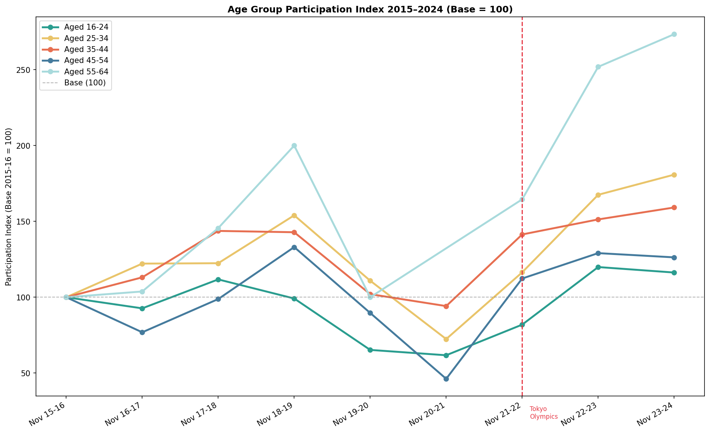
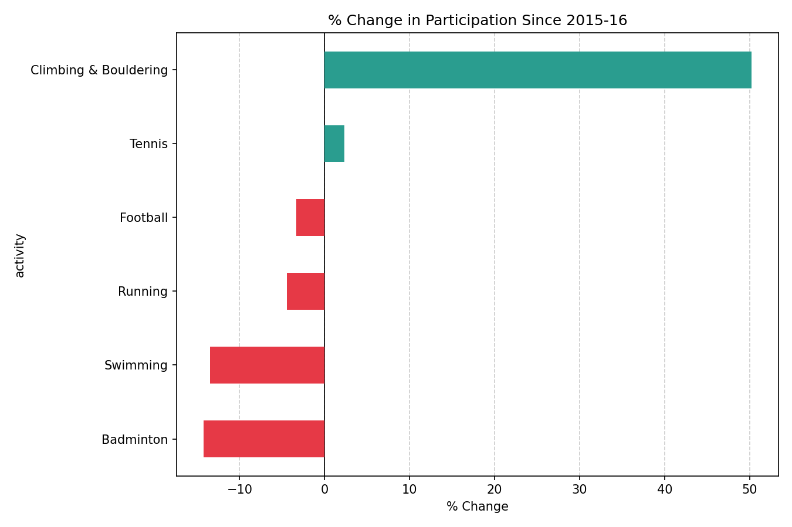

The Rise of Climbing:
Hype vs Reality?
An empirical investigation into whether bouldering's meteoric rise in the UK reflects genuine participation growth — or is simply a product of media attention and cultural hype.
In the years since indoor climbing first appeared at the Olympic Games in Tokyo 2021, the sport has experienced a surge in public interest unlike almost any other recreational activity in the United Kingdom. Gym memberships have climbed, new bouldering facilities have opened in cities across the country, and social media feeds have filled with chalk-dusted hands gripping coloured holds.
But is this growth real? This project examines the data behind climbing's rise — drawing on participation statistics, Google Trends data, gym location records, and demographic breakdowns — to answer a simple question: is the rise of climbing driven by genuine, sustained participation, or is it a flash of cultural hype destined to fade?
Using a range of empirical methods including regression analysis and regional heatmapping, this project paints a data-driven picture of one of the UK's fastest growing sports.
01 Exploring the Data
The following charts form the backbone of this analysis. Each visualisation draws on a different data source, together building a complete picture of climbing's trajectory in the UK.

Add your written analysis here. Describe the key trends, any surprising findings, and what the data tells us about climbing participation across age groups. Which age group showed the most growth? Was there a particular turning point?

Add your written analysis here. Explain what the area chart reveals about overall participation trends and how this supports or challenges the hypothesis that climbing growth is genuine rather than hype driven.

Add your written analysis here. Describe which regions show the strongest participation and whether geographic clustering suggests climbing is primarily an urban phenomenon or spreading more broadly across the UK.

Add your written analysis here. Explain the regression model, what variables were included, and what the statistical results tell us about the drivers of climbing participation.

Add your written analysis here. How does climbing's growth compare to other sports? Is it exceptional or in line with broader trends in recreational sport participation across the UK?

Add your written analysis here. Discuss how brand growth and commercial investment relate to participation figures and whether commercial interest is a leading or lagging indicator of sport growth.
02 Explore the Data Yourself
The chart below is interactive — hover over the data points to explore age-based climbing trends in detail. Use it to draw your own conclusions from the underlying data.
03 Key Findings
Based on the analysis above, the following conclusions can be drawn about the nature of climbing's growth in the United Kingdom.
Add your first key finding here
Replace this with a detailed explanation of your first key finding. Reference your charts and data to support this conclusion.
Add your second key finding here
Replace this with a detailed explanation of your second key finding. Reference your charts and data to support this conclusion.
Add your third key finding here
Replace this with a detailed explanation of your third key finding. Reference your charts and data to support this conclusion.
In conclusion — replace this with your overall conclusion. Is climbing's rise hype or reality? What does the data say? Summarise your key argument here in 2–3 sentences.